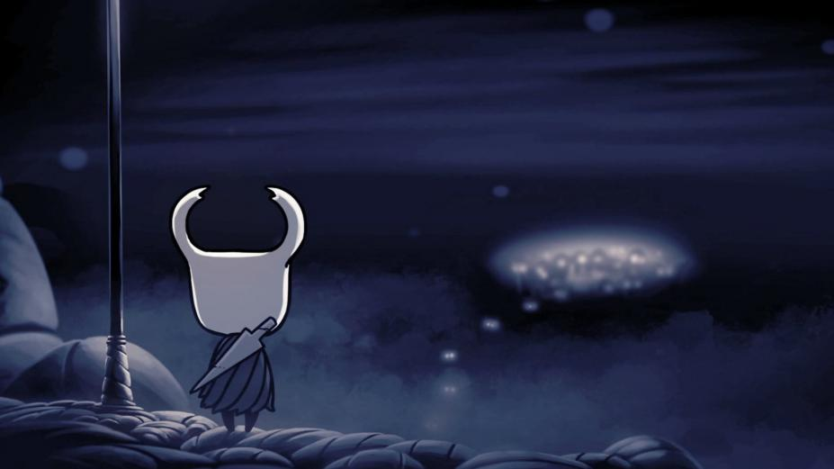

我，小骑士，不知从何而来，不知到何处去。直到……
不知行了多远之后，远处的灯光吸引了我，我来到了这个小镇。

镇中遍布灯光，却荒无人烟。我正疑惑，忽然听到一阵苍老的声音：“已经好久没见到新客人了，不用张望了，这个小镇早已衰落。哦，对了，这里是德特茅斯，我……你叫我虫长者就好了。”角落里缓缓走出一个身影，苍老、佝偻。虫长者向我描述了镇中往日的热闹、喧嚣，以及为何如今变成这样——“不知道从哪天开始，所有的虫子们一个接一个跳进了那口井，他们说要寻找壮观的地下世界——呵，可笑——然后，没有一只虫子回来过。”顺着虫长者的手所指的方向，果然有一口井，深不见底。
壮观的地下世界吗？想着，我毫不犹豫地跳了下去，只留虫长者惊异的眼神与失望的叹息。
“又一个……”
他不知道，我将改变圣巢的命运。